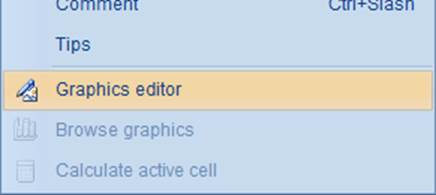
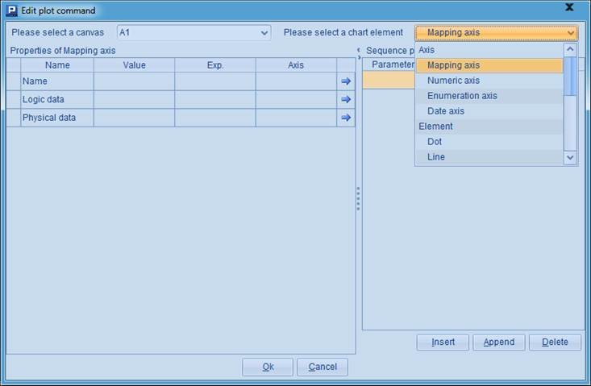
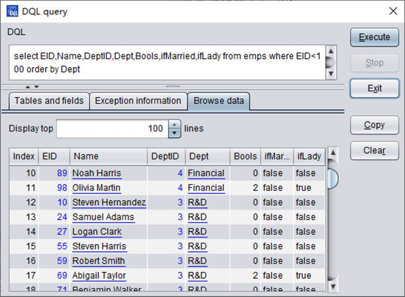

esProc provides a variety of chart elements. Each is defined by many parameters and with a distinct way. So it is complicated to plot chart elements using G.plot() function. To streamline settings and modification of the parameters in plotting a chart element, esProc offers a visual editing environment.
Right-click on the cell for plotting a chart element and choose Graphics editor from the menu to edit a plotting algorithm (or click Edit>Graphics editor on the menu bar to do this):

Do the editing on the pop-up visual editor interface:

At the top left of the window, select a canvas from the drop-down list. And select the desired chart element from the drop-down list at the top right. Then in the lower section, configure the properties of the selected chart element:

The properties of the numeric axis element can be set on this list. Detailed information about these properties and their configuration will be covered in The Axis Element. The other chart elements will be discussed through a series of sections including The Line Element, The Text Element.
After properties of the desired chart element are configured, a plotting string expression, =G.plot(¡), will be automatically generated. The properties can be modified later through Graphics editor, yet the selected canvas and the chart style can¡¯t be changed. If they really need to be changed, modify the expression, or delete it and replot the chart element.